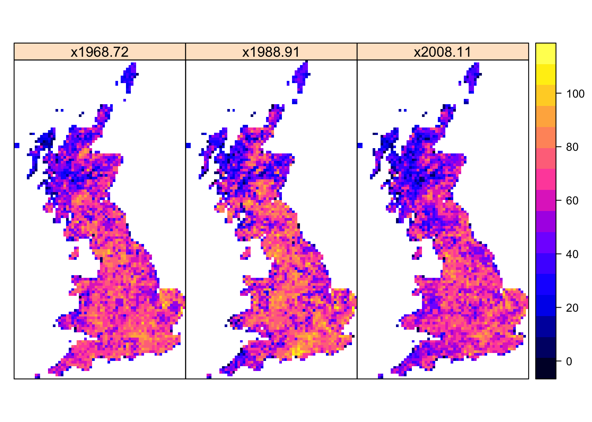
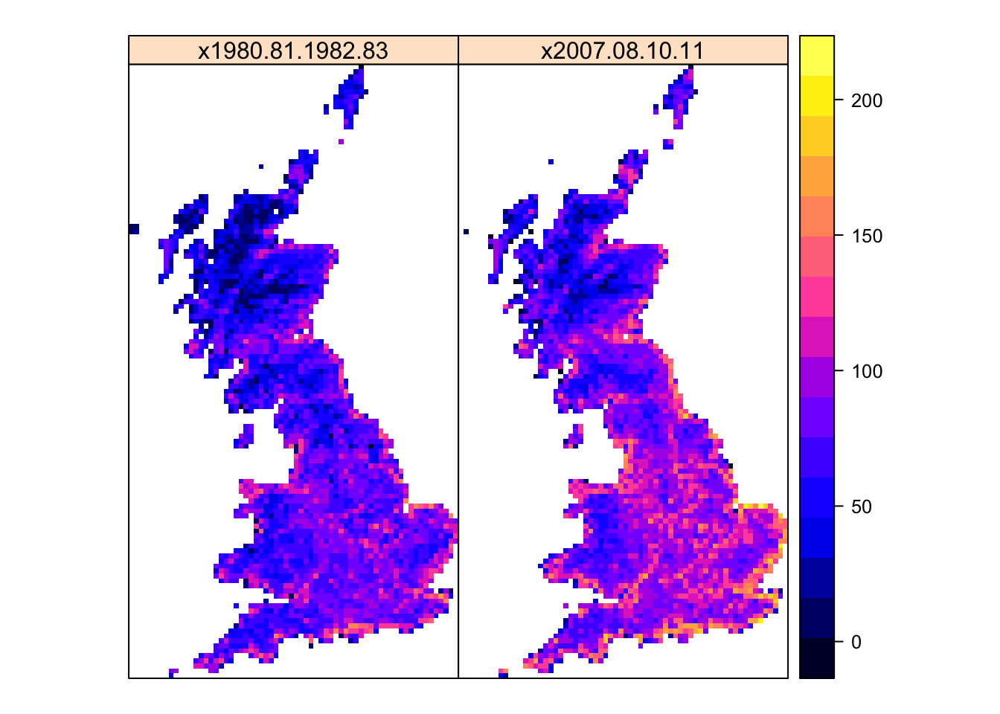

Analyse biodiversity patterns
Today we wander a little away from the strict learning objectives and attempt some first analyses of biodiversity patterns to get a feeling of the different aspects of biodiversity and biodiversity change that could be investigated. In contrast to the other weeks’ tutorials, I do not give a full script here but rather want to encourage to do some additional analyses yourself. To this end, you will find tasks to work on at the end of each section.
1 Distribution data
All analyses of today will be based on a dataset of British breeding and wintering birds recently made available Gillings et al. (2019). The data contain breeding bird records in 20-year cycles (1968-1972, 1988-1991, 2008-2011 and) wintering bird records in 30-year cycles (1981/1982-1983-1984, 2007/2008-2010/2011) at a 10 km spatial resolution throughout Britain, Ireland, the Isle of Man and the Channel Islands. Some rarer species are represented at 20 or 50 km resolutions. Here, we will concentrate on bird records from Britain at 10 km resolution. The data are available through the British Trust of Ornithology (www.bto.org) and can be downloaded here. Please download the data and save it in an appropriate folder (e.g. in data folder).
We can now read in the data into R. There are different files available in the folder that are further detailed in the corresponding publication (Gillings et al. 2019). The combined distribution dataset (distributions.csv) contains records of 458 species over the different years and seasons, mainly at 10 km resolution. The combined distirbution change dataset (distribution_changes.csv) describes changes in occupancy between the different periods. Additionally a taxonomic look-up table (species_lookup.csv) and a coordinate look-up table (grid_square_coordinates_lookup.csv) are provided. The last file (percent_benchmark_species_detected.csv) summarises the percentage of benchmark species detected in each 10 km cell and provides information on recording effort.
# Read in the combined distribution dataset:
bird_dist <- read.table('data/distributions.csv',header=T, sep=',', stringsAsFactors = F)
# Read in the combined distribution change dataset:
bird_distchange <- read.table('data/distribution_changes.csv',header=T, sep=',', stringsAsFactors = F)
# Read in the coordinate look-up table:
bird_coords <- read.table('data/grid_square_coordinates_lookup.csv',header=T, sep=',', stringsAsFactors = F)
# Read in the taxonomic look-up table:
bird_spp <- read.table('data/species_lookup.csv',header=T, sep=',', stringsAsFactors = F)Let’s take a first look at the data and find out what information is contained in there. For example, what does the status information mean? For details, please read the companion article (Gillings et al. 2019).
unique(bird_spp$scientific_name)unique(bird_dist$period)## [1] "1968-72" "2008-11" "2007/08-10/11" "1980/81-1982/83"
## [5] "1988-91"unique(bird_dist$status)## [1] "Confirmed" "Probable" "Possible" "Present" "Breeding" "Seen"1.1 Data filtering
I suggest concentrating on records with the highest confidence, the British Isles only, and the 10 km resolution only. Also, we only want to work at the taxonomic rank of species.
# Filter taxonomic rank:
speccodes <- subset(bird_spp, taxonomic_rank=='Species')$speccode
spp <- subset(bird_spp, taxonomic_rank=='Species')$scientific_name
# Bird distirbution records
bird_dist_summer <- subset(bird_dist, resolution==10 & season=='B' & island=='B' & status %in% c('Confirmed','Breeding') & speccode %in% speccodes)
bird_dist_winter <- subset(bird_dist, resolution==10 & season=='W' & island=='B' & speccode %in% speccodes)
# Bird distribution changes
bird_distchange_summer <- subset(bird_distchange,season=='B' & resolution==10 & island=='B' & speccode %in% speccodes)
bird_distchange_winter <- subset(bird_distchange,season=='W' & resolution==10 & island=='B' & speccode %in% speccodes)1.2 Data processing: species richness
I would first like to analyse some aspects of species richness over the different periods. To this end, we need to sum single species per period. For transforming the data into rasters, it is also helpful to reshape them from long to wide format.
# species richness summer
bird_SR_summer <- aggregate(bird_dist_summer[,'speccode'], by = list(period = bird_dist_summer$period, grid = bird_dist_summer$grid), FUN = 'length')
bird_SR_summer <- reshape(bird_SR_summer, direction='wide', timevar='period', idvar='grid',sep='')
# species richness winter
bird_SR_winter <- aggregate(bird_dist_winter[,'speccode'], by = list(period = bird_dist_winter$period, grid = bird_dist_winter$grid), FUN = 'length')
bird_SR_winter <- reshape(bird_SR_winter, direction='wide', timevar='period', idvar='grid',sep='')Now, we would like to make rasters of the species richness data frames. The coordinates are provided in the British National Grid, with grid letters and grid digits. In the coordinates look-up table, we find the longitudes and latitudes for the grid cells. However, as the British National Grid is based on a transverse Mercator projection, the longitudes and latitudes are not equally spaced in the geographic projection. We could still rasterize them but I think it is actually easier to work on the British National Grid. We can easily convert the grid letters and grid digits in the so-called Easting and Northing coordinates. Conversion functions can be found in the internet, and there are even R packages that do this, e.g. rnrfa. For simplicity, I have converted them already and you can download it here.
# Load grid references:
grid_ref <- read.table('data/UK_10km_gridref.csv',header=T,sep=',')proj_UK <- '+proj=tmerc +lat_0=49 +lon_0=-2 +k=0.9996012717 +x_0=400000 +y_0=-100000 +ellps=airy +datum=OSGB36 +units=m +no_defs'
# Make raster of species richness
library(raster)## Loading required package: spr_bird_SR_summer <- rasterFromXYZ(merge(bird_SR_summer, grid_ref)[,c(5:6,2:4)], crs=proj_UK)
r_bird_SR_winter <- rasterFromXYZ(merge(bird_SR_winter, grid_ref)[,c(4:5,2:3)], crs=proj_UK)
spplot(r_bird_SR_summer)
spplot(r_bird_SR_winter)
1.3 Tasks I
Today, you should start working on your own data processing solutions and data analyses.
Task 1:
Analyse different aspects of the latitudinal gradient of biodiversity (Gaston 2000).
- plot species richness against latitude
- plot species richness against mean annual temperature and against annual precipitation
For the latter task, you will have to retrieve climatic data at the appropriate resolution and in the appriopriate projection. Look up the function ?projectRaster to find out how to reproject rasters.
Task 2:
Analyse species-level changes:
- How many breeding bird species had decreasing/stable/increasing range sizes 1970-2010?
- Map the species richness of these three groups in 1970 and in 2010
- Map the difference in richness between 1970 and 2010 for these three groups
As a small hint, the species-level changes can be retrieved from our data frame bird_distchange_summer.
table(bird_distchange_summer$interval)##
## 1970-1990 1970-2010 1990-2010
## 242343 255510 248483table(subset(bird_distchange_summer, interval=='1970-2010')$n_tenkms_loss)##
## 0 1
## 220672 348382 The IUCN red list
A useful resource when analysing diversity changes, species range changes and population changes is the IUCN Red List of threatened species: www.iucnredlist.org (IUCN 2019). This provides information on the global conservation status of species, specifically of animals, fungi and plant species. The IUCN has defined a set of criteria to evaluate the extinction risk of species. According to these criteria, species are classified into nine different categories although strictly only five categories describe the conservation status - from least concern to critically endangered (Fig. 1; IUCN 2012).
![**Figure 1. The IUCN red list categories. Adapted from [@IUCN2012].**](figures/redlist.png)
Figure 1. The IUCN red list categories. Adapted from (IUCN 2012).
The IUCN distinguishes five criteria that are used to classify species into one of the three threatened categories (Fig. 1; IUCN (2012)):
- A. Population size reduction
- B. Extent of occurrence (B1) or Area of occupancy (B2)
- C. Small population size and decline
- D. Very small or restricted population
- E. Quantitative analysis (probability of extinction within next 100 years)
All of these information (the red list category, the relevant assessment criteria, the population trend, etc.) are provided by the IUCN. We can look at all these information online, e.g. for the Balearic Shearwater.
Of course, if you want to analyse your species data in light of these IUCN assessments, it can become very tedious to look up all information by hand. The IUCN red list team provides an API for this purpose, and the R package rredlist is a client to access this IUCN red list API. It requires an API key / a token to use the API. You have to indicate your research objectives for using the API.
I have got permission to use some red list information for the UK breeding birds in class, but I am not allowed to post them. Thus, course participants can download the data (UK_birds_redlist_status.csv and UK_birds_redlist_threats.csv) in the secured moodle folder (but please be aware that the IUCN terms of use apply!). External readers are advised to generate an API token:
library(rredlist)
rl_use_iucn()2.1 Red list categories
If you have your own IUCN API key, you can easily download the information on species’ red list categories:
# Download red list category for single species
rl_search('Gavia stellata', key= MY_IUCN_REDLIST_KEY)
# Download red list categories for all species
redlist_status <- do.call(rbind,lapply(spp,FUN=function(sp){rl_search(sp, key= MY_IUCN_REDLIST_KEY)$result}))Course participants can download the data from moodle and read it in:
redlist_status <- read.table('data/UK_birds_redlist_status.csv', header=T, sep=',')Here is an example of the kind of information in the table. Compare this to the information given on the IUCN website, e.g. for the Balearic Shearwater.
redlist_status[1:10,10:20]## authority published_year assessment_date category
## 1 (Pontoppidan, 1763) 2018 2018-08-07 LC
## 2 (Linnaeus, 1758) 2018 2018-08-07 LC
## 3 (Brünnich, 1764) 2018 2018-08-07 LC
## 4 (Gray, 1859) 2018 2018-08-07 NT
## 5 (Linnaeus, 1758) 2016 2016-10-01 LC
## 6 (Pallas, 1764) 2017 2016-10-01 LC
## 7 (Linnaeus, 1758) 2018 2018-08-07 LC
## 8 (Boddaert, 1783) 2018 2018-08-07 LC
## 9 (Linnaeus, 1758) 2018 2018-08-07 VU
## 10 Brehm, 1831 2018 2018-08-07 LC
## criteria population_trend marine_system freshwater_system
## 1 <NA> Decreasing TRUE TRUE
## 2 <NA> Decreasing TRUE TRUE
## 3 <NA> Stable TRUE TRUE
## 4 <NA> Decreasing TRUE TRUE
## 5 <NA> Stable FALSE TRUE
## 6 <NA> Decreasing TRUE TRUE
## 7 <NA> Unknown TRUE TRUE
## 8 <NA> Decreasing TRUE TRUE
## 9 A2abce+3bce+4abce Decreasing TRUE TRUE
## 10 <NA> Unknown TRUE TRUE
## terrestrial_system assessor reviewer
## 1 TRUE BirdLife International Westrip, J.
## 2 TRUE BirdLife International Martin, R.
## 3 TRUE BirdLife International Westrip, J.
## 4 TRUE BirdLife International Westrip, J.
## 5 TRUE BirdLife International Butchart, S. & Symes, A.
## 6 TRUE BirdLife International Butchart, S. & Symes, A.
## 7 TRUE BirdLife International Westrip, J.
## 8 TRUE BirdLife International Westrip, J.
## 9 TRUE BirdLife International Westrip, J.
## 10 TRUE BirdLife International Hermes, C.2.2 Tasks II
Now, I would like you to work with the red list status table a bit more:
Task 3:
Analyse IUCN population trends and distributional changes from Task I:
- Relate population trend to range sizes (extent of occurrence, EOO) - using the red list status information
- Compare red list population trends to the atlas distribution changes 1970-2010 (from Task I)
Task 4:
Map species richness for different red list categories:
- Map species richness of species of one threatened category (CR, EN, VU) and of species one non-threatened category (NT, LC)
2.3 Red list threats
The IUCN also assesses the main threats per species as you saw in the Balearic Shearwater example. The Threat Classification Scheme can be found here.
If you have your own IUCN API key, you can easily download the information on species’ red list threats:
# Download red list threats for single species
rl_threats('Gavia stellata', key= MY_IUCN_REDLIST_KEY)
# Download red list threats for all species
redlist_threats <- do.call(rbind,lapply(seq_len(length(spp)),FUN=function(i){xi <- rl_threats(spp[i], key= MY_IUCN_REDLIST_KEY); if(length(xi$result)) {data.frame(species=spp[i],speccode=speccodes[i],xi$result) }}))Course participants can download the data from moodle and read it in:
redlist_threats <- read.table('data/UK_birds_redlist_threats.csv', header=T, sep=',')The threats are ordered hierarchically from broad threat type to very detailed threat, e.g.:
- 2 Agriculture & aquaculture > 2.2 Wood & pulp plantations > 2.2.1 Small-holder plantations
- 5 Biological resource use > 5.4 Fishing & harvesting aquatic resources > 5.4.3 Unintentional effects: subsistence/small scale (species being assessed is not the target)[harvest]
Here is an example of the kind of information in the table. For more details, please have a look at the IUCN website, e.g. the Balearic Shearwater example, and at the Threat Classification Scheme.
redlist_threats[sample(nrow(redlist_threats),10),-c(1:2)]## code
## 532 7.1.1
## 422 8.1.2
## 301 8.1.2
## 291 6.1
## 1474 5.1.1
## 963 6.1
## 472 2.1.3
## 341 9.2
## 919 8.2
## 832 8.1
## title
## 532 Increase in fire frequency/intensity
## 422 Named species (Neovison vison)
## 301 Named species (Ctenopharyngodon idella)
## 291 Recreational activities
## 1474 Intentional use (species is the target)
## 963 Recreational activities
## 472 Agro-industry farming
## 341 Industrial & military effluents
## 919 Problematic native species/diseases (Larus canus)
## 832 Invasive non-native/alien species/diseases (Clostridium botulinum)
## timing scope severity
## 532 Ongoing Majority (50-90%) Slow, Significant Declines
## 422 Ongoing Minority (<50%) Slow, Significant Declines
## 301 Ongoing Minority (<50%) Causing/Could cause fluctuations
## 291 Ongoing Minority (<50%) Slow, Significant Declines
## 1474 Ongoing Minority (<50%) Negligible declines
## 963 Ongoing Majority (50-90%) Negligible declines
## 472 Ongoing Minority (<50%) Slow, Significant Declines
## 341 Ongoing Majority (50-90%) Causing/Could cause fluctuations
## 919 Ongoing Minority (<50%) Slow, Significant Declines
## 832 Future Minority (<50%) Rapid Declines
## score invasive
## 532 Medium Impact: 6 <NA>
## 422 Low Impact: 5 Neovison vison
## 301 Low Impact: 5 Ctenopharyngodon idella
## 291 Low Impact: 5 <NA>
## 1474 Low Impact: 4 <NA>
## 963 Low Impact: 5 <NA>
## 472 Low Impact: 5 <NA>
## 341 Medium Impact: 6 <NA>
## 919 Low Impact: 5 Larus canus
## 832 Low Impact: 4 Clostridium botulinum2.4 Tasks III
The last set of tasks deals with the frequency of different threats and the geographic patterns of threats.Task 5:
Analyse major threat categories:
- What are the five most important threats for the birds sighted in Britain and for the birds breeding in Britain?
- What are the five most important threats for the breeding birds with range declines and the breeding birds with range increases 1970-2010?
Analyse the timing of threats:
- How many species suffer from current threats and how many species are expected to suffer from threats in the future?
- Which are the five most important threats for the future?
Task 6:
Map hotspots of threats:
- Pick two of the most important threat categories and map the species richness of breeding birds for these threats (seperately!)
- Repeat for future threats
References
Gaston, Kevin J. 2000. “Global Patterns in Biodiversity.” Nature 405: 220–27. https://doi.org/10.1038/35012228.
Gillings, Simon, Dawn E. Balmer, Brian J. Caffrey, Iain S. Downie, David W. Gibbons, Peter C. Lack, James B. Reid, J. Tim R. Sharrock, Robert L. Swann, and Robert J. Fuller. 2019. “Breeding and Wintering Bird Distributions in Britain and Ireland from Citizen Science Bird Atlases.” Global Ecology and Biogeography 28 (7): 866–74. https://doi.org/10.1111/geb.12906.
IUCN. 2012. IUCN Red List Categories and Criteria: Version 3.1. Gland, Switzerland; Cambridge, UK: IUCN.
———. 2019. The IUCN Red List of Threatened Species. Version 2019-2. http://www.iucnredlist.org. Downloaded on 27 October 2019.